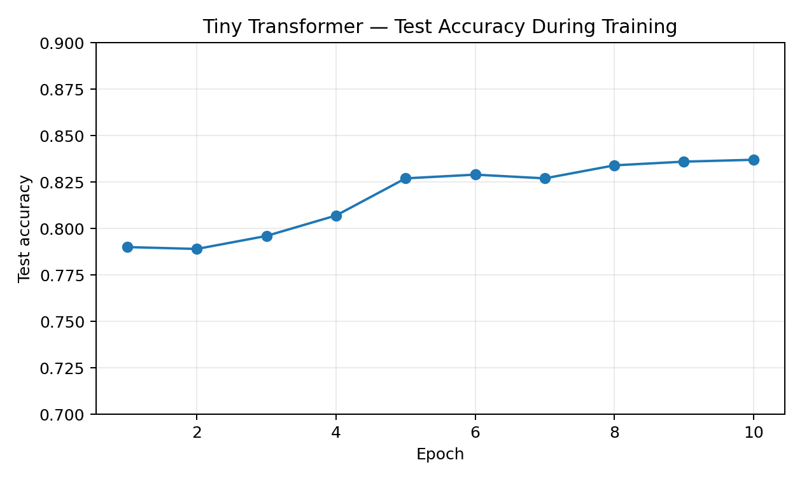
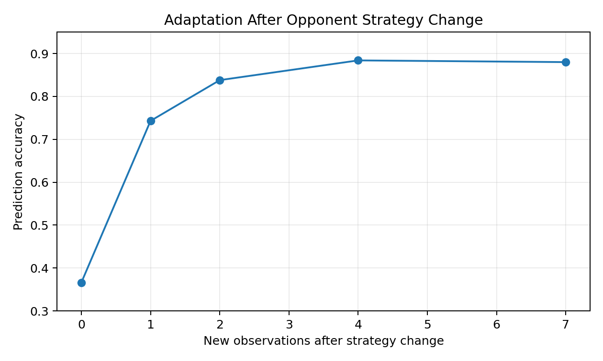

Tiny Turntable Transformer
Sequence modelling, opponent prediction and game-theoretic decision-making in a deliberately small Transformer.
Overview
This project extends my earlier work on Mario Party: Tricky Turntable by replacing explicit Bayesian opponent models with a small Transformer trained to infer an opponent's behavior directly from recent interactions.
The objective is intentionally simple: use the smallest architecture possible to understand how a Transformer can extract a hidden behavioral rule from a short sequence, predict the opponent's next action, and turn that prediction into a strategic decision.
The prediction problem
The opponent follows one of two noisy behavioral rules.
- Mirror: usually copies our previous action.
- Switch: usually maps action 0 to 2, action 1 to 1, and action 2 to 0.
The Transformer is not told which rule generated the sequence. It only observes the recent history of joint actions and must predict the opponent's next move.
Sequence representation
Each interaction contains our action and the opponent's action, with both taking values in {0, 1, 2}. A joint interaction is encoded as a single token:
token = 3 × our action + opponent action
This produces a vocabulary of only 9 possible tokens. The model observes the previous 8 interactions and predicts one of the three possible opponent actions.
Architecture
The network is deliberately tiny so that every component remains interpretable and the full training pipeline can be understood directly.
The full model contains approximately 5.3k trainable parameters.
From prediction to decision
The neural network is used only to predict the opponent. Strategic decision-making remains separate.
The Transformer's logits are converted into probabilities over the opponent's three possible actions. For each action available to the agent, I then compute its expected payoff under the original Tricky Turntable payoff matrix.
Deep learning predicts the opponent.
Game theory chooses the best response.
This separation makes the model easier to interpret: the neural network solves a supervised sequence-prediction problem, while the decision layer applies an explicit expected-utility rule.
Training results
In the concept-drift benchmark, the Transformer is trained on trajectories generated by noisy Mirror and Switch opponents, with the hidden strategy changing during each trajectory.
After 10 epochs, the recorded test accuracy reaches 83.7%.

Concept drift
The more interesting experiment introduces a hidden regime change. Each trajectory begins with either Mirror or Switch and then switches to the other behavior at an unknown point.
The model receives neither the regime label nor the change point. Its only information is the rolling context of the last eight interactions.

Adaptation results
Immediately after the hidden strategy change, the model's prediction accuracy falls to 36.6%, close to chance.
It then adapts rapidly as observations from the new regime replace observations from the previous one in the context window:
- 1 new observation: 74.3% accuracy
- 2 new observations: 83.8% accuracy
- 4 new observations: 88.4% accuracy
- 7 new observations: 88.0% accuracy
The model recovers most of its predictive performance after only two observations from the new behavioral regime, despite never being explicitly told that a regime change occurred.
Interpretation
The experiment provides a small-scale illustration of one of the main strengths of attention-based sequence models: predictions can depend on recent patterns in the interaction history rather than on a fixed, explicitly specified opponent model.
In this environment, the context window also creates a simple mechanism for adaptation. Old-regime observations progressively leave the sequence, while new-regime observations become dominant, allowing the model to change its prediction without an explicit change-point detector.
Relation to the earlier Turntable project
My first Tricky Turntable project compared explicit Bayesian opponent modelling with model-free reinforcement learning. This project studies the same underlying strategic environment from a different angle: whether a neural sequence model can learn the relevant behavioral structure directly from interaction data.
Together, the two projects provide a controlled comparison between explicit probabilistic modelling, reinforcement learning and representation learning with Transformers.
Methods
The project is implemented from scratch in PyTorch and uses synthetic trajectories generated from the game's behavioral rules. The main components are token and positional embeddings, multi-head self-attention, cross-entropy training and an explicit game-theoretic best-response layer.
Project status
This is a deliberately small educational deep-learning project. The goal is not to maximize model scale, but to make the mechanics of sequence modelling, attention and strategic decision-making transparent enough that each part of the pipeline can be inspected and explained.